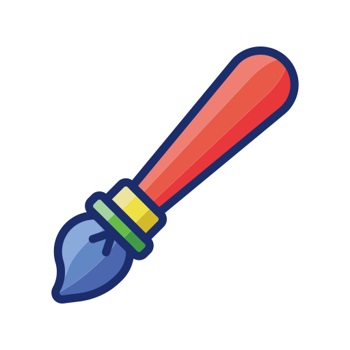
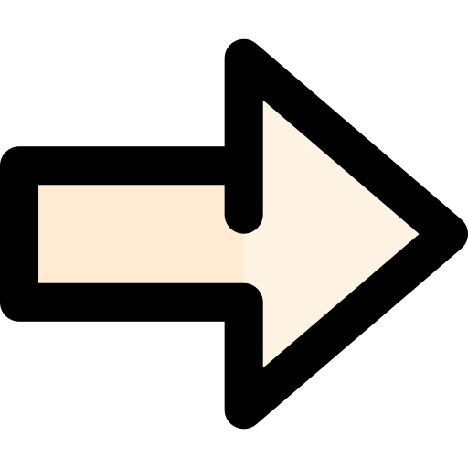
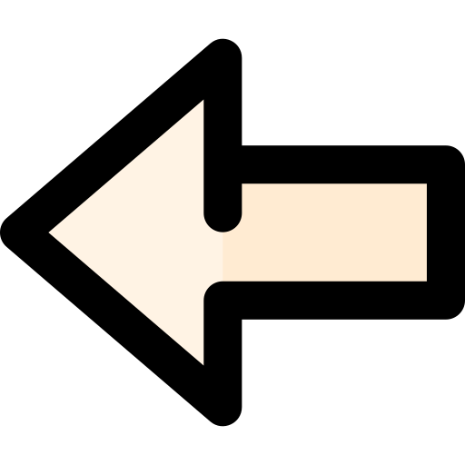

<canvas #canvasDraw (touchstart)="handleStart($event)" (touchmove)="handleMove($event)"
  (touchend)="handleEnd($event)"></canvas>

<ion-fab #switchLineWidthButton bottom right style="margin-right: 45px;" class="bottomButton"
  [ngClass]="{'hidden': isDrawing}">
  <button id="btnLineWidth" ion-fab mini [style.background-color]="currentColor"
    [style.color]="isColorLight(currentColor) ? 'darkgrey' : 'white'">
    
  </button>
  <ion-fab-list side="top">
    <button id="btnCurrent" ion-fab [style.width.px]="lineWidths[i]" [style.height.px]="lineWidths[i]"
      [style.background-color]="currentColor" *ngFor="let lineWidth of lineWidths; let i = index"
      (click)="switchLineWidth(i)" #switchLineWidthButton{{i}}></button>
  </ion-fab-list>
</ion-fab>

<ion-fab #switchColorButton bottom right class="bottomButton" [ngClass]="{'hidden': isDrawing}">
  <button id="btn_isColor" ion-fab mini [style.background-color]="currentColor"
    [style.color]="isColorLight(currentColor) ? 'darkgrey' : 'white'">
    
  </button>
  <ion-fab-list side="top">
    <button id="btnSwitch" ion-fab [style.background-color]="colors[i]" *ngFor="let color of colors; let i = index"
      (click)="switchColor(i)" #switchColorButton{{i}}></button>
  </ion-fab-list>
</ion-fab>

<ion-fab top right class="topButton" [ngClass]="{'hidden': isDrawing}">
  <button id="btnClear"(click)="clearDraw()" ion-fab mini [style.background-color]="'grey'">
        
    </button>
</ion-fab>

<ion-fab top right style="margin-right: 45px;" class="topButton" [ngClass]="{'hidden': isDrawing}">
  <button id="btnRedo" (click)="redoDraw()" ion-fab mini
    [style.background-color]="(actualState + 1) < lastStates.length ? 'darkgrey' : 'gray'">
     
  </button>
</ion-fab>

<ion-fab top right style="margin-right: 90px;" class="topButton" [ngClass]="{'hidden': isDrawing}">
  <button id="btnUndo" (click)="undoDraw()" ion-fab mini [style.background-color]="actualState > 0 ? 'darkgrey' : 'gray'">
      
  </button>
</ion-fab>
